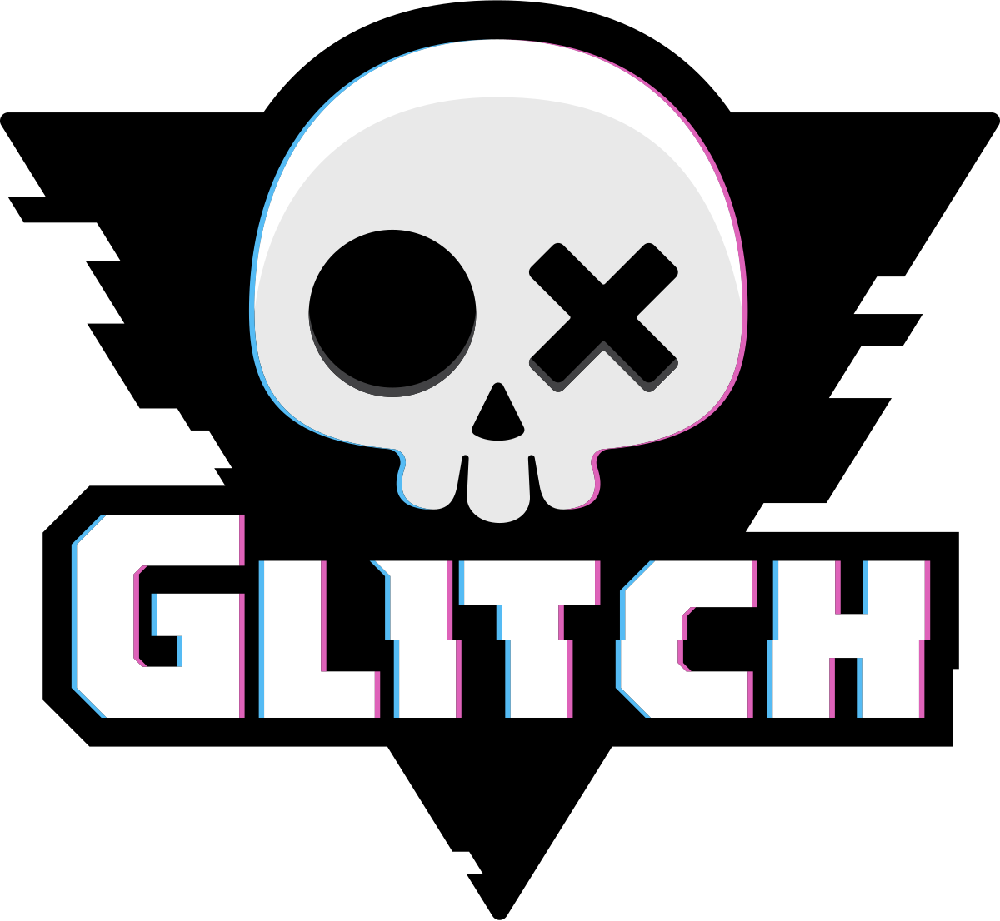
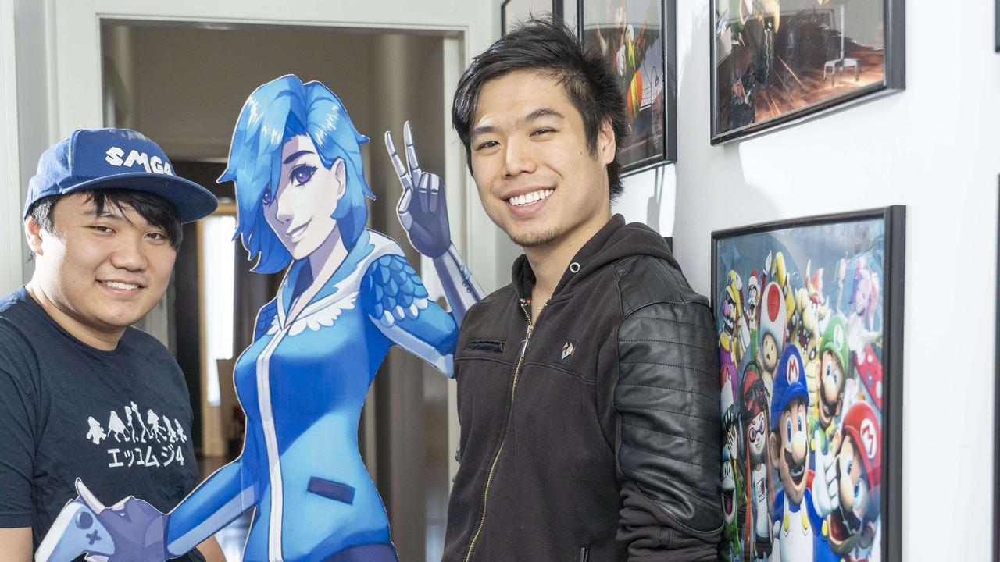

Glitch Productions!
About Me | Schedule | Fanpage
GLITCH!

There is a popular small studio production in Youtube for Indie shows that creators made with lots of crazy creativity and different show styles from each creator's show to make them noticiable for they're creation they even made they're own shows. Glitch Production are producers that help you grow your show popular. Glitch Productions began in 2017 by brothers named Kevin and Luke Lerdwichagul. There first goal was to change the way west creates teen and young adult animations.

Glitch's first published show came out in July 25, 2019. The show was called "Meta Runners" a sci-fi series became a huge hit. The realease of episode 1 was a huge hit with 4.5M views. Meta runners is about a girl named tari who discovered that she has the ability to wrap inside video games and comes across a undercover group called MD-5 who she helps in their mission
Make a page dedicated to something you are interested in. It could be a band/singer/music group, or a video game, or a toy/board game, or an actor/actress, or a TV show/movie, or anything else you can think of. Use your page to describe why you like, and what you like about it, and why you think other people should be interested in it. You can include links to other fanpages or the official page if you'd like.